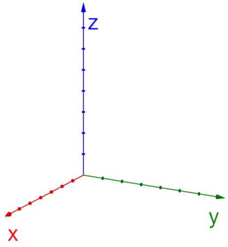
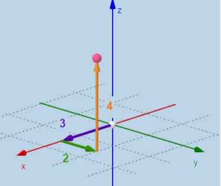
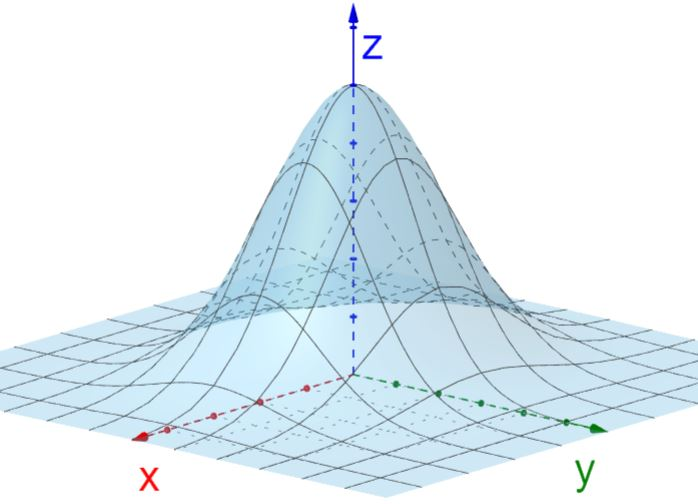
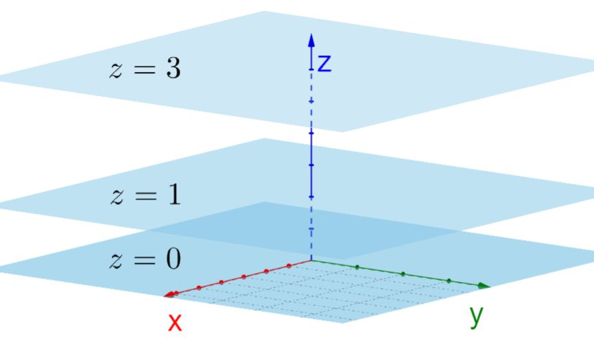
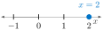
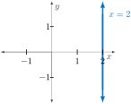
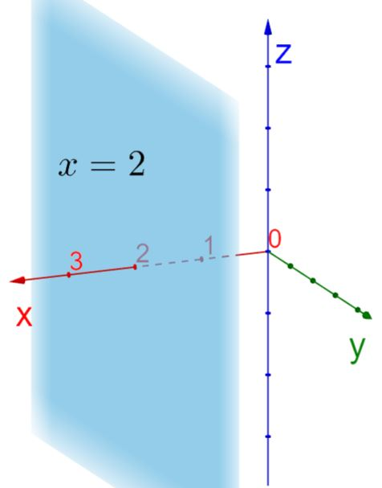
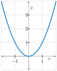
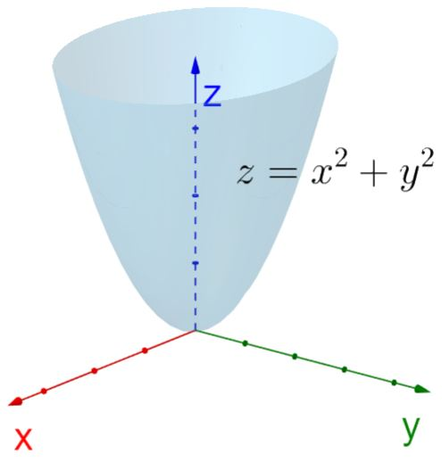
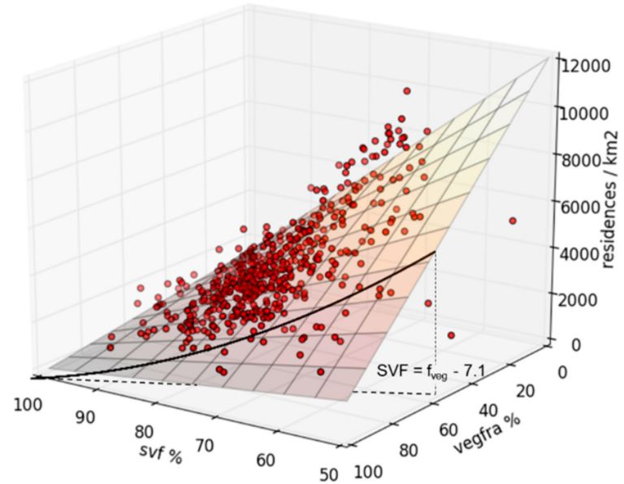

How do we mathematically represent locations in three-dimensional space?
Graphically, how can we understand functions of several variables?
To locate a point in a (2-D) plane, we use an ordered pair of real numbers \((a,b)\) where \(a\) is the \(x\)-coordinate and \(b\) is the \(y\)-coordinate. To locate a point in 3-space, we use an ordered triple \((a,b,c)\) where \(c\) is the \(z\)-coordinate. The direction of the \(z\)-axis is determined by the right-hand rule.

Figure3.2.1.The direction of the \(z\)-axis is determined according to the right-hand rule.
One of many ways to remember this rule is to imagine tightening a bolt using a ratchet. In the process, if the handle of the ratchet moves from along the positive \(x\)-axis towards the positive \(y\)-axis, the bolt will tighten - that is, the bolt will move in the direction of the positive \(z\)-axis.
We represent a point \(P\) in space by the ordered triple \((a,b,c)\) where
\(a\) is the directed distance from the \(yz\)-plane to \(P\)
\(b\) is the directed distance from the \(xz\)-plane to \(P\)
\(c\) is the directed distance from the \(xy\)-plane to \(P\)
The numbers \(a\text{,}\)\(b\text{,}\) and \(c\) are called the coordinates of \(P\) (the \(x\)-coordinate, \(y\)-coordinate, and \(z\)-coordinate respectively).

Figure3.2.3.Locating a point \(P\) in space. In this case, \((3,2,4)\) is illustrated. (Source: www.geogebra.org/m/rA4fWtKH 34
). We can also think of the coordinates as instructions telling you how to get to the point. To get to point \(P\text{,}\) start at the origin, go \(a\) units along the \(x\)-axis, then \(b\) units in the direction parallel to the \(y\)-axis, and finally \(c\) units in the direction parallel to the \(z\)-axis.
The coordinates can be positive, negative or zero. A zero coordinate means "don’t move in this direction." A negative coordinate means "go in the negative direction parallel to this axis."
Checkpoint3.2.4.Plotting Points in 3D.
Plot the points \(P = (0,0,2)\text{,}\)\(Q = (3,4,0)\text{,}\)\(R = (0, 4, 5)\) and \(S = (3,4,5)\) on the coordinate axes.
We can graph an equation involving variables \(x, y\) and \(z\) in 3-space; such a graph is a plot of all ordered triples \((x,y,z)\) that satisfy the equation.

Figure3.2.7.The graph of \(z=e^{-x^2-y^2}\) in 3-space.

Figure3.2.8.The graphs of \(z=0\text{,}\)\(z=1\text{,}\) and \(z=3\text{.}\)
Checkpoint3.2.9.Graphs in 1, 2, 3D.
Graph \(x=2\)
in 1-space.
in 2-space.
in 3-space.
Answer.

Graph of \(x=2\) in 1-space.
Figure3.2.10.The graph of \(x=2\) in 1-space.

Graph of \(x=2\) in 2-space.
Figure3.2.11.The graph of \(x=2\) in 2-space.

Graph of \(x=2\) in 3-space.
Figure3.2.12.The graph of \(x=2\) in 3-space.
Example3.2.13.Graphing Functions of Two Variables.
The graph of \(f(x) = x^2\) is the set of all ordered pairs \((x,y)\) that make the equation \(y=x^2\) true. Plotting each of these points in the \(xy-\)plane yields a parabola as shown in Figure 3.2.14.

Graph of \(f(x)=x^2\) in 2-space.
Figure3.2.14.The graph of \(f(x)=x^2\) in 2-space.
The graph of \(f(x,y)=x^2+y^2\) is shown in Figure 3.2.15. A few notes are in order.
This graph is never falls below the \(xy\)-plane and appears to be the graph of the parabola \(z=x^2\) in the \(xz\)-plane rotated about the \(z\)-axis.
The intersection of this surface with the \(yz\)-plane is a parabola (namely \(z=y^2\)) called a trace. The intersection of this surface with the \(xz\)-plane, another trace, is also a parabola (namely \(z=x^2\)).
For each \((x,y)\) in the \(xy\)-plane, there is a unique point on the graph. This is similar to the vertical line test for a function of one variable. That is, a curve in the \(xy\)-plane is the graph of a function \(y=f(x)\) if and only if it satisfies the vertical (i.e. parallel to the \(y\)-axis) line test. Likewise, a surface in \(xyz\)-space is the graph of a function \(z=f(x,y)\) if and only if it satisfies the vertical (i.e. parallel to the \(z\)-axis) line test.

Figure3.2.15.The graph of \(f(x,y)=x^2+y^2\text{.}\)
Example3.2.16.Urban Planning.
In an effort to determing the impact of various urban planning strategies on the urban heat island (\(UHI\)) for The Hague (Netherlands), a numerical relationship between residential density \(R\) (in residences per square kilometer), the sky view factor \(SVF\) (as a percentage), and the vegetation fraction \(f_{veg}\) (again, as a percentage) was empirically found to be
A graph of the resulting surface fitting collected data can be seen in Figure 3.2.17.

Figure3.2.17.A surface representing the empirical relationship between sky view factor (\(SVF\)), the vegetation factor \(f_{veg}\text{,}\) and residential density \(R\text{.}\) (Source: Quantifying the Effect of Different Urban Planning Strategies on Heat Stress for Current and Future Climates in the Agglomeration of The Hague (The Netherlands), Koopmans, et. al., Atmosphere, 2018.)
Checkpoint3.2.18.Plotting an Urban Planning Model.
to plot the function \(z=-213x-200y+1.85xy+22687\) on the domain \(0 \leq x \leq 50\text{,}\)\(0 \leq y \leq 50\text{.}\) Compare the shape of this surface with that of Figure 3.2.17.
Shown in Figure 3.2.20 is an isobaric surface. Isobaric surfaces are surfaces of equal air pressure in the atmosphere. They are the graphs of a function of two variables - \(x\) and \(y\) for location. If \(z\) is a variable representing height above location \((x,y)\text{,}\) and \(p(x,y,z)\) is the air pressure at \((x,y,z)\text{,}\) then an isobaric surface can be described by the set of points \((x,y,z)\) satisfying \(p(x,y,z)=C\text{.}\)
The relative location of isobaric surfaces gives an idea of the spatial distribution of air pressure. In a cyclone (that is, an area of reduced pressure) an isobaric surface is a concave surface and in an anticyclone (that is, an area of increased pressure) it is convex. The slope of isobaric surfaces determines wind speed: the greater the slope of the isobaric surfaces, the greater the wind speed, all other conditions being equal. The intersection of isobaric surfaces with a horizontal plane (at sea level or other heights) produces isobars (see Example 3.3.2).
Example3.2.21.An Iosbaric Surface.
Shown in Figure 3.2.22 is in isobaric surface representing 850 mb (millibars). Note that this pressure occurs at varying heights in the atmosphere. For example, where the temperature is warmest, it occurs at a height of 1800 meters. Where the temperature is coolest, 850 mb occurs at a height of 1200 meters. That is, temperatures change from average, to warm, back to average, to cold, and then to average again at the eastern edge of Figure 3.2.22.
If you imagine hiking along the 850 mb surface you can begin to understand where the term ridge comes from. On a ridge, the reference pressure is found at higher than average altitude above the ground. A trough is the opposite - it is a valley where the reference pressure is found at lower altitude. Figure 3.2.23 shows a height contour map associated with the isobaric surface of Figure 3.2.22.
The Ideal Gas Law, \(PV = RT\text{,}\) relates the pressure (\(P\text{,}\) in pascals), temperature (\(T\text{,}\) in Kelvin), and volume (\(V\text{,}\) in cubic meters) of 1 mole of a gas (\(R = 8.314 \ \frac{\text{J} }{\text{ mol } \ \text{K} }\) is the universal gas constant), and describes the behavior of gases that do not liquefy easily, such as oxygen and hydrogen. We can solve the ideal gas law for the volume and hence treat the volume as a function of the pressure and temperature:
Explain in detail what the trace of \(V\) with \(P=1000\) tells us about a key relationship between two quantities.
Explain in detail what the trace of \(V\) with \(T=5\) tells us.
Explain in detail what the level curve \(V = 0.5\) tells us.
Use 2 or three additional traces in each direction to make a rough sketch of the surface over the domain of \(V\) where \(P\) and \(T\) are each nonnegative. Write at least one sentence that describes the way the surface looks.
Based on all your work above, write a couple of sentences that describe the effects that temperature and pressure have on volume.
Answer.
\(V(1000,T) = \frac{8.314T}{1000}\) represents the volume of 1 mole of a gas at a temp T, kelvin, when the pressure is 1000 pascals. This is a linear function with a positive slope of \(\frac{8.314}{1000}\text{.}\) As the temperature increases, the volume increases at a constant rate of \(\frac{8.314 \frac{J}{mol k}}{1000 pascals}\text{.}\)
\(V(P,5) = \frac{8.314(5)}{P}\) represents the volume of 1 mole of a gas with a pressure of P, pascals, when the temperature is 5 Kelvin. This is a rational function. As the pressure increases, the volume decreases and approaches zero.
\(V(P,T) = 0.5\) represents the combinations of temperature and pressure that result in a volume of 1 mole of gas of 0.5 \(m^{3}\text{.}\)
\(V(500,T), V(1000,T), and V(2000,T)\) are traces that are linear functions with a positive slope.
\(V(P,5), V(P,10), and V(P,20)\) are traces that are positive rational functions for \(P \geq 0\text{.}\)
These traces indicate the graph of \(V\) looks like a sheet of paper angling up through the \(P\) axis in the first octant that bends up towards the \(VP\)-plane.
The volume is directly proportional to the temperature and inversely proportional to the pressure. As temperature increases, the volume increases. As pressure increases, the volume decreases.
Solution.
\(V(1000,T) = \frac{8.314T}{1000}\) represents the volume of 1 mole of a gas at a temp T, kelvin, when the pressure is 1000 pascals. This is a linear function with a positive slope of \(\frac{8.314}{1000}\text{.}\) As the temperature increases, the volume increases at a constant rate of \(\frac{8.314 \frac{J}{mol k}}{1000 pascals}\text{.}\)
\(V(P,5) = \frac{8.314(5)}{P}\) represents the volume of 1 mole of a gas with a pressure of P, pascals, when the temperature is 5 Kelvin. This is a rational function. As the pressure increases, the volume decreases and approaches zero.
\(V(P,T) = 0.5\) represents the combinations of temperature and pressure that result in a volume of 1 mole of gas of 0.5 \(m^{3}\text{.}\)
\(V(500,T), V(1000,T), and V(2000,T)\) are traces that are linear functions with a positive slope.
\(V(P,5), V(P,10), and V(P,20)\) are traces that are positive rational functions for \(P \geq 0\text{.}\)
These traces indicate the graph of \(V\) looks like a sheet of paper angling up through the \(P\) axis in the first octant that bends up towards the \(VP\)-plane.
The volume is directly proportional to the temperature and inversely proportional to the pressure. As temperature increases, the volume increases. As pressure increases, the volume decreases.
9.Plotting in 3D with Technology.
Technology is widely available to plot equations in 3-space.
is one technology to utilize for plotting equations involving three variables. Use GeoGebra 3d 42
https://www.geogebra.org/3d
to sketch the graph of the ellipsoid \(x^2 + y^2 + 4z^2 = 1\text{.}\) Then attempt to reproduce Figure 3.2.7.
Another easy tool to use for graphing is Wolfram Alpha 43
http://wolframalpha.com
. Use this tool to reproduce the graph of \(z=x^2 + y^2\) over the domain \(-5 \leq x \leq 5, -5 \leq y \leq 5\) as shown in Figure 3.2.15. Then, attempt to reproduce Figure 3.2.7.
AI (such as Microsoft Copilot) is another tool to utilize (carefully!) for producing images of functions of two variables. Prompt Copilot to graph \(z=x^2-y^2+1\) over the domain \(-2 \leq x \leq 2, -2 \leq y \leq 2\text{.}\)